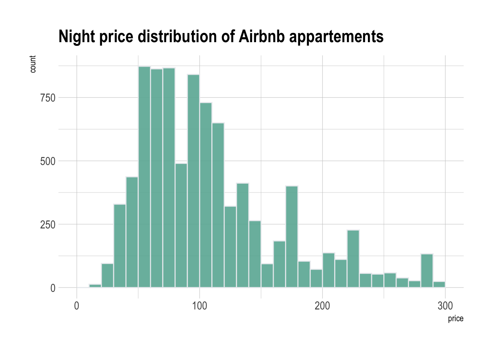
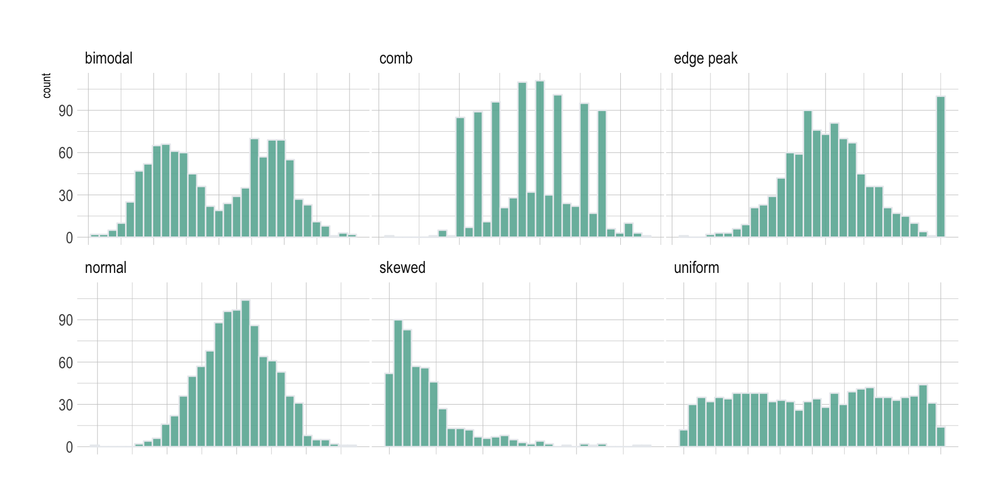
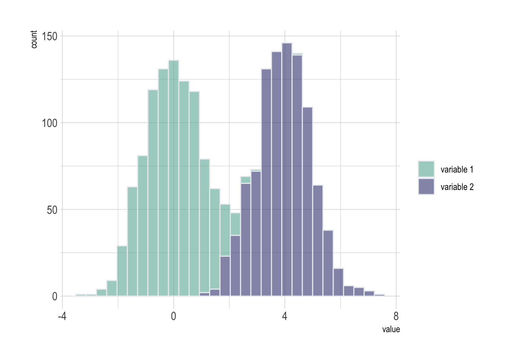
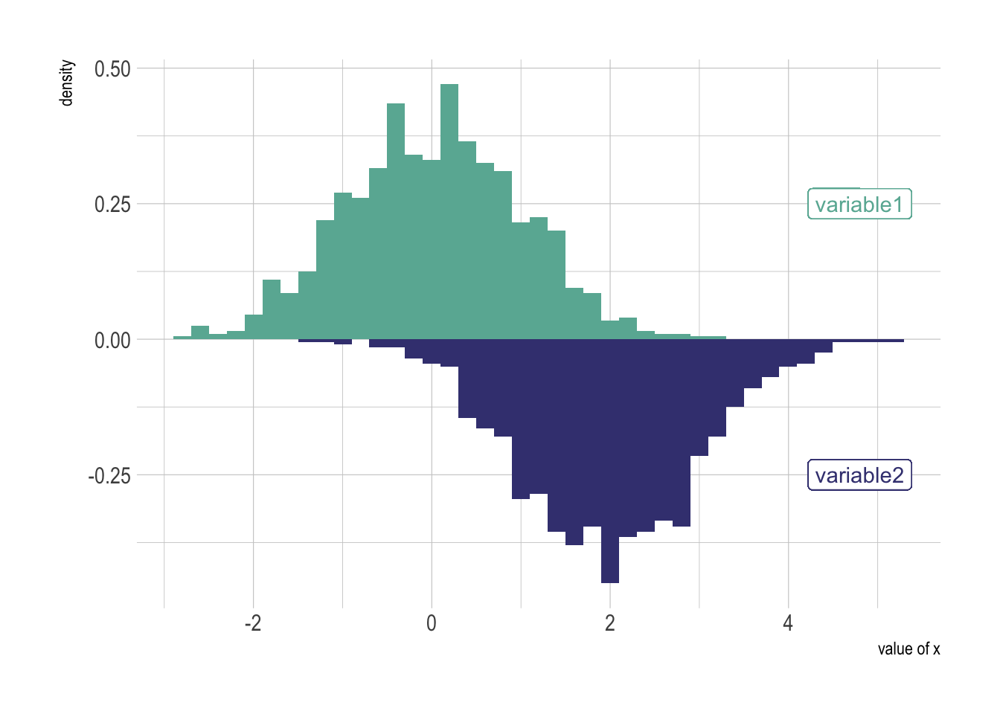

Histogram
definition - mistake - related - code
A histogram is an accurate graphical representation of the distribution of a numeric variable. It takes as input numeric variables only. The variable is cut into several bins, and the number of observation per bin is represented by the height of the bar.
Here is an example showing the distribution of the night price of Rbnb appartements in the south of France. Price range is divided per 10 euros interval. For example, there are slightly less than 750 appartements with a night price between 100 and 110 euros:
# Libraries
library(tidyverse)
library(hrbrthemes)
library(viridis)
# Load dataset from github
data <- read.table("https://raw.githubusercontent.com/holtzy/data_to_viz/master/Example_dataset/1_OneNum.csv", header=TRUE)
# Make the histogram
data %>%
filter( price<300 ) %>%
ggplot( aes(x=price)) +
stat_bin(breaks=seq(0,300,10), fill="#69b3a2", color="#e9ecef", alpha=0.9) +
ggtitle("Night price distribution of Airbnb appartements") +
theme_ipsum()
Histogram are used to study the distribution of one or a few variables. Checking the distribution of your variables one by one is probably the first task you should do when you get a new dataset. It delivers a good quantity of information. Several distribution shapes exist, here is an illustration of the 6 most common ones:
# Build dataset with different distributions
data <- data.frame(
type = c( rep("edge peak", 1000), rep("comb", 1000), rep("normal", 1000), rep("uniform", 1000), rep("bimodal", 1000), rep("skewed", 1000) ),
value = c( rnorm(900), rep(3, 100), rnorm(360, sd=0.5), rep(c(-1,-0.75,-0.5,-0.25,0,0.25,0.5,0.75), 80), rnorm(1000), runif(1000), rnorm(500, mean=-2), rnorm(500, mean=2), abs(log(rnorm(1000))) )
)
# Represent it
data %>%
ggplot( aes(x=value)) +
geom_histogram(fill="#69b3a2", color="#e9ecef", alpha=0.9) +
facet_wrap(~type, scale="free_x") +
theme_ipsum() +
theme(
panel.spacing = unit(0.1, "lines"),
axis.title.x=element_blank(),
axis.text.x=element_blank(),
axis.ticks.x=element_blank()
)
Checking this distribution also helps you discovering mistakes in the data. For example, the comb distribution can often denote a rounding that has been applied to the variable or another mistake.
As a second step, histogram allow to compare the distribution of a few variables. Don’t compare more than 3 or 4, it would make the figure cluttered and unreadable. This comparison can be done showing the 2 variables on the same graphic and using transparency.
# Build dataset with different distributions
data <- data.frame(
type = c( rep("variable 1", 1000), rep("variable 2", 1000) ),
value = c( rnorm(1000), rnorm(1000, mean=4) )
)
# Represent it
data %>%
ggplot( aes(x=value, fill=type)) +
geom_histogram( color="#e9ecef", alpha=0.6) +
scale_fill_manual(values=c("#69b3a2", "#404080")) +
theme_ipsum() +
labs(fill="")
A common variation of the histogram is the mirror histogram: it puts face to face 2 histograms to compare their distribution.
data <- data.frame(
x = rnorm(1000),
y = rnorm(1000, mean=2)
)
data %>%
ggplot( aes(x) ) +
geom_histogram( aes(x = x, y = ..density..), binwidth = diff(range(data$x))/30, fill="#69b3a2" ) +
geom_label( aes(x=4.8, y=0.25, label="variable1"), color="#69b3a2") +
geom_histogram( aes(x = y, y = -..density..), binwidth = diff(range(data$x))/30, fill= "#404080") +
geom_label( aes(x=4.8, y=-0.25, label="variable2"), color="#404080") +
theme_ipsum() +
xlab("value of x")
The R and Python graph galleries are 2 websites providing hundreds of chart example, always providing the reproducible code. Click the button below to see how to build the chart you need with your favorite programing language.
R graph gallery Python gallery
Any thoughts on this? Found any mistake? Disagree? Please drop me a word on twitter or in the comment section below:
A work by Yan Holtz for data-to-viz.com